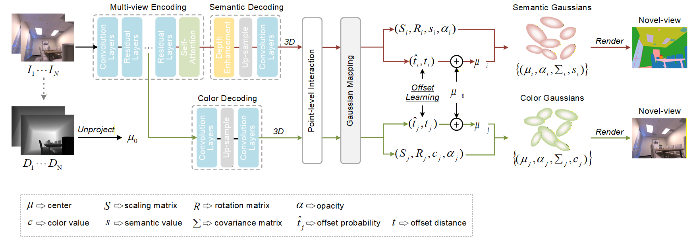
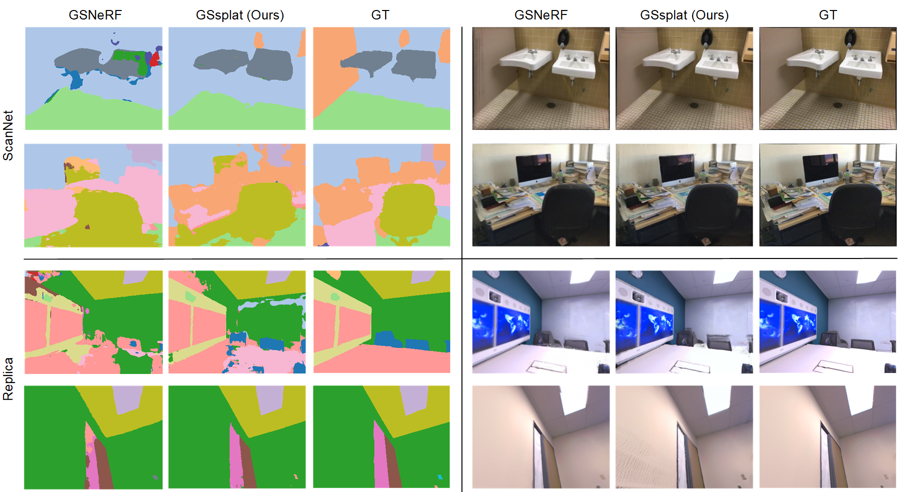

The semantic synthesis of unseen scenes from multiple viewpoints is crucial for research in 3D scene understanding. Current methods are capable of rendering novel-view images and semantic maps by reconstructing generalizable Neural Radiance Fields. However, they often suffer from limitations in speed and segmentation performance. We propose a generalizable semantic Gaussian Splatting method (GSsplat) for efficient novel-view synthesis. Our model predicts the positions and attributes of scene-adaptive Gaussian distributions in a single inference, replacing the densification and pruning processes of traditional scene-specific Gaussian Splatting. In the multi-task framework, a hybrid network is designed to extract color and semantic information and predict Gaussian parameters. To improve the spatial perception of Gaussians for high-quality rendering, we design a new offset learning module using group-based supervision and a point-level interaction module with spatial unit aggregation. When evaluated with varying numbers of multi-view inputs, GSsplat achieves state-of-the-art performance for semantic synthesis at the fastest speed.

Given N source views and camera poses, our model directly predicts the semantic Gaussian and color Gaussian parameters from RGB and depth information for 3D scene reconstruction. Firstly, the hybrid network uses a multi-view encoding module to extract 2D semantic and color features. Next, the features are decoded to the original image resolution and unprojected per pixel to the 3D space. After point-level interaction and Gaussian mapping, the semantic and color Gaussian radiance fields are constructed by the predicted parameters, and novel views are rendered through the Gaussian splatting operation.

@article{xiao2025gssplat,
title={GSsplat: Generalizable semantic Gaussian splatting for novel-view synthesis in 3D scenes},
author={Xiao, Feng and Xu, Hongbin and Liang, Wanlin and Kang, Wenxiong},
journal={arXiv preprint arXiv:2505.04659},
year={2025}
}